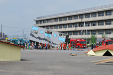

第34回九都県市合同防災訓練（埼玉会場）がおこなわれました
埼玉県と白岡市の主催による第34回九都県市合同防災訓練（埼玉会場）が8月31日（土）午前9時から、白岡市の白岡市立南中学校・白岡市総合運動公園ほかを会場におこなわれました。
埼玉県生協連と埼玉県との「災害時における県民生活の安定を図るための基本協定」（1996年締結）にもとづく15回目の参加となった今年、埼玉県生協連は、防災フェアおよび応急生活物資配布訓練（コープみらい）の二つの企画に、5会員生協の組合員と役職員、県生協連あわせて24名が参加しました。
関東大震災から90年の節目となった今年、埼玉県・白岡市総合防災訓練の会場となった白岡市総合運動公園はじめ市内各所には、自衛隊、消防、警察、医療機関や企業、市民団体等の関係者116団体と地元住民など1万6,000人が参加しました。
訓練は、白岡市直下を震源とするマグニチュード6.9の地震が発生し、白岡市内で震度6強を観測。県中央部・東部を中心に甚大な被害が出ているとの想定のもと、自治体、防災関係機関及び住民の災害対応について、実効性を確認し、防災関係機関相互の協力の円滑化を図ることを目的におこなわれました。
|  |
防災フェアでは、生協の防災の取り組みや災害時の役割、東日本大震災での生協の活動を広く県民の方々にお知らせする内容で、これまでの被災地支援の取り組み等のタペストリーの展示を行いました。展示コーナーでは、クイズもおこない、日頃の備蓄品などの点検をしていただくものとしました。
医療生協さいたまは、血圧測定・体脂肪チェック・握力測定を行い、災害時の支援に備える訓練をおこないました。また、コープみらいは、埼玉県との独自の協定にもとづき、応急生活物資の配布訓練として、応急物資3品目を配布しました。
＊九都県市合同防災訓練と生協の活動
大規模災害に備えて生協は、埼玉県と埼玉県生協連で「災害時における県民生活の安定を図るための基本協定」を結んでおり、災害発生時には、これに対応する人員や物資、輸送手段等の面で役割が期待されています。九都県市合同防災訓練もこの基本協定にもとづいて、県生協連災害対策委員会を構成する地域生協、労済生協、医療生協、事業連合などが連携して、物資の供給等の支援活動に力を発揮できるよう、訓練に協力しています。
今年は、コープみらい、パルシステム埼玉、埼玉県労働者共済生協、医療生協さいたま、コープネット事業連合、埼玉県生協連24名が参加しました。